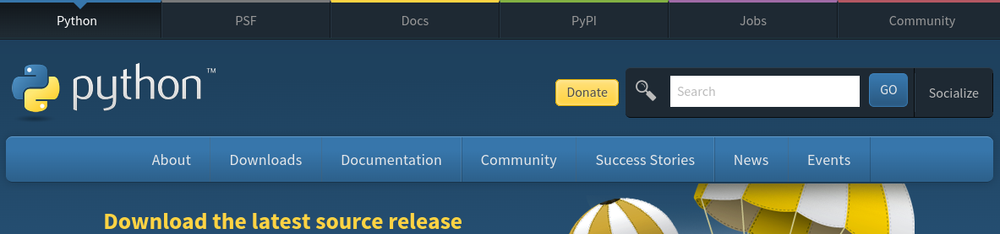
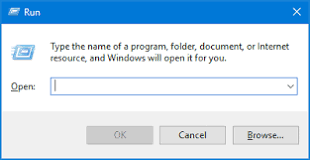

Download the script here
Vex VR Coral Reef Clean-Up auto start script
You must be on windows, linux, mac, but not chrome os (unless linux apps is enabled on the chromebook)
This how-to will only cover Windows
Steps:
1: Download Python at this link:
Python download page hyperlink

2: Open command prompt
Press Windows+R to open “Run” box. Type “cmd” and then click “OK” to open a regular Command Prompt

3: Type "pip install pyautogui" and press enter
Pyautogui docs for installation
4: Run the script
In command prompt type "python " then the directory of the .py file and press enter
More help running it if you need it.
That's it! If you open VR Vex it will auto start and stop and take screenshots of the score!